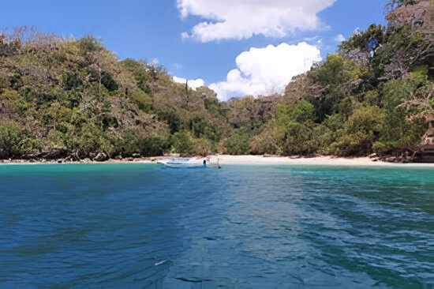
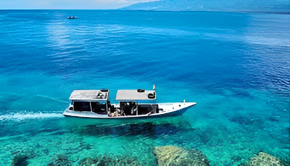
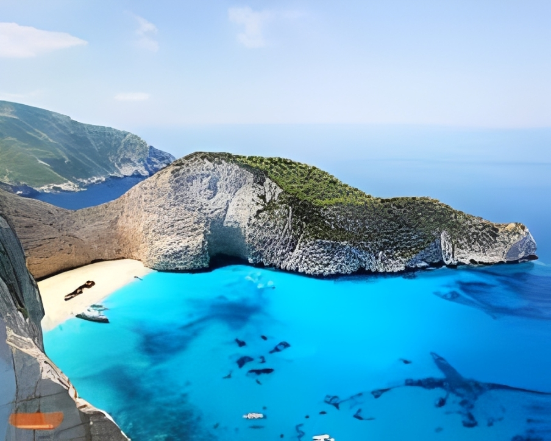
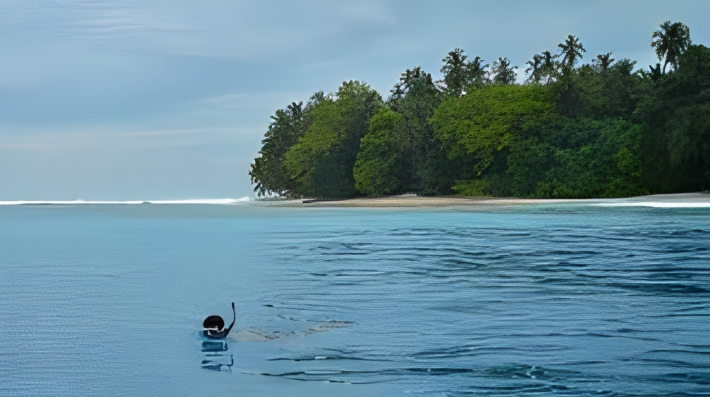
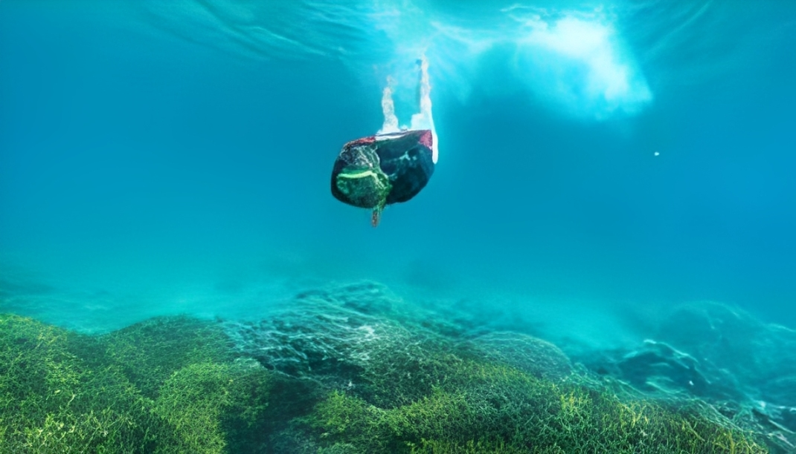
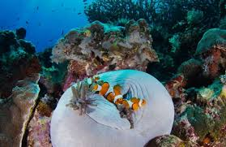

Teluk Biru
destinasi wisata bahari tersembunyi yang terkenal akan keindahan bawah lautnya di Banyuwangi
Galeri Foto






Informasi Detail
Teluk Biru (Blue Bay) adalah destinasi wisata bahari tersembunyi yang terkenal akan keindahan bawah lautnya di Banyuwangi, Jawa Timur. Terletak di dalam kawasan Taman Nasional Alas Purwo, akses menuju lokasi ini hanya bisa ditempuh melalui jalur laut dengan menyewa perahu dari Pelabuhan Muncar.
Keunikan Teluk Ijo
- Akses Terbatas via Jalur Laut: Keunikan utamanya adalah lokasinya yang tersembunyi di dalam kawasan Taman Nasional Alas Purwo. Destinasi ini tidak dapat dijangkau melalui jalan darat biasa. Akses satu-satunya adalah dengan menyewa perahu dari Pelabuhan Muncar, memberikan kesan petualangan eksklusif.
- Keanekaragaman Hayati yang Masih Prima: Meskipun aksesnya sulit, hal ini menjaga ekosistemnya tetap alami. Teluk Biru terkenal karena memiliki terumbu karang yang masih sangat sehat dan menjadi rumah bagi ratusan spesies ikan hias
- Garis Pantai Terpanjang di Banyuwangi: Meskipun aksesnya sulit, hal ini menjaga ekosistemnya tetap alami. Teluk Biru terkenal karena memiliki terumbu karang yang masih sangat sehat dan menjadi rumah bagi ratusan spesies ikan hias
- Fenomena "Blue Water": Air lautnya yang sering kali berwarna biru pekat dan jernih, terutama saat kondisi cuaca sedang baik, menciptakan kontras yang indah dengan lanskap hijau di sekelilingnya.
- Bagian dari Konservasi Alas Purwo: air lautnya yang sering kali berwarna biru pekat dan jernih, terutama saat kondisi cuaca sedang baik, menciptakan kontras yang indah dengan lanskap hijau di sekelilingnya.
Aktivitas yang Bisa Dilakukan
- Snorkeling dan Diving menikmati keindahan terumbu karang bawah laut
- Berenang dengan Ombak Tenang di Tengah Air Biru Toska
- Menikmati Pemandangan Alam yang Menakjubkan dan Terumbu Karang yang Eksotis
- Menikmati Wisata Perahu Menuju Teluk Biru
Info Praktis
- Lokasi: Taman Nasional Alas Purwo, Kec. Tegaldlimo, Banyuwangi
- Biaya Masuk: Paket lengkap snorkeling di Teluk Biru dapat berkisar sekitar Rp 275.000 per orang.
- Waktu Terbaik Berkunjung: September hingga Februari, ketika kondisi gelombang relatif lebih tenang. Destinasi ini tidak selalu buka sepanjang tahun karena risiko gelombang tinggi di Selat Bali.
- Transportasi: Satu-satunya cara untuk mencapai Teluk Biru adalah menggunakan perahu wisata dari Pelabuhan Muncar
- Akomodasi: Pengunjung biasanya menginap di daerah sekitar yang lebih dekat dengan titik keberangkatan perahu, yaitu di daerah Muncar atau desa-desa di sekitarnya seperti Wringinputih dan Purwoharjo
Peraturan Kunjungan
- Dilarang Membuang Sampah Sembarangan
- Dilarang Merusak Fasilitas atau Alam
- Menghargai Makhluk Hidup
- Menggunakan Pakaian yang Sopan
- Mematuhi Seluruh Himbauan dan Perizinan yang Ada